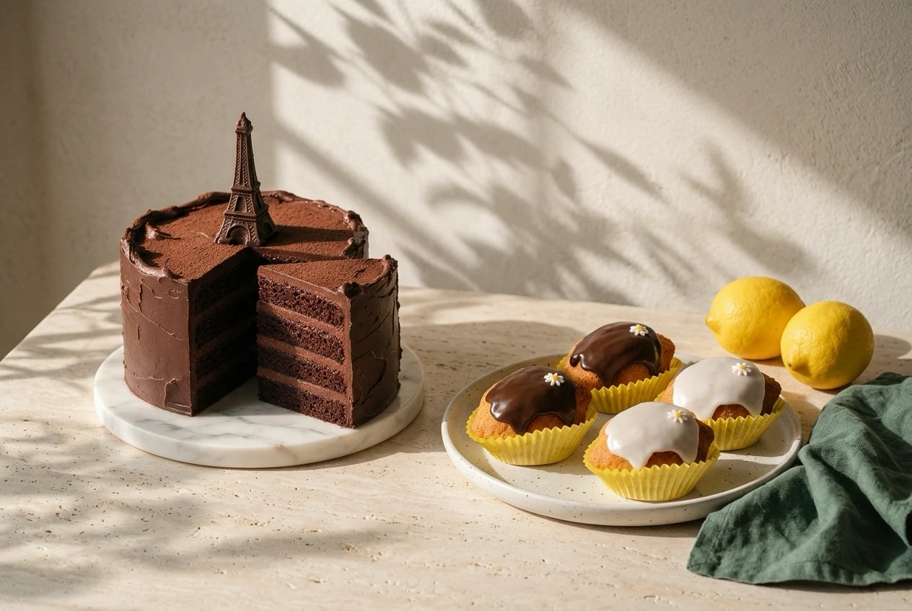
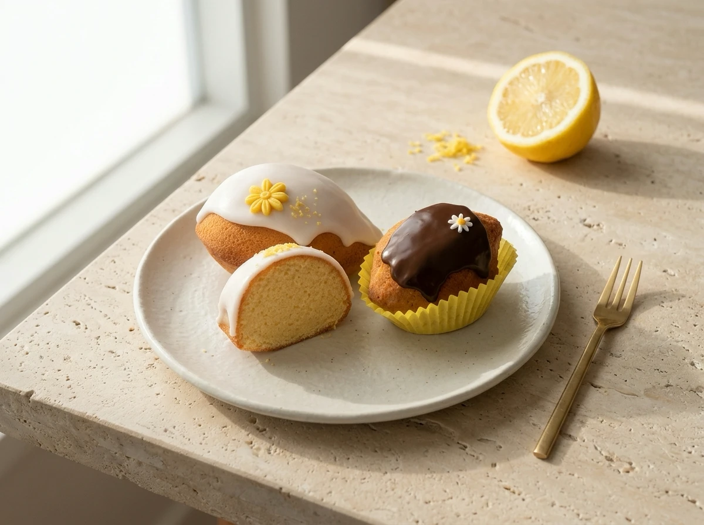
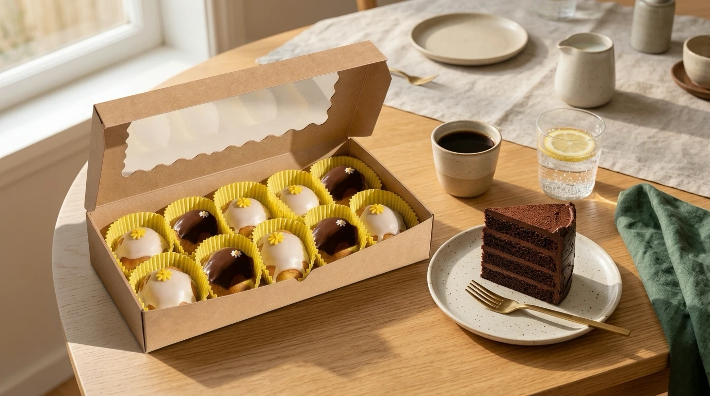

VERYGOOD JOURNAL · FLAVOUR BALANCE & HOSTING GUIDE
How bright lemon juice and aromatic zest cut through dense dark ganache—and two ways to bring citrus onto a celebration table alongside Pavé Chocolate Cake.
A dense, four-layer dark chocolate cake earns immediate admiration at the centre of a table. Yet when every dessert on a warm-weather spread leans heavy and sweet, guests often feel full after just a few forkfuls.
Across Australian cafés and dinner tables, pairing rich cocoa with bright citrus has become a quiet hosting essential. Whether served side by side—a silky dark chocolate Pavé cake next to freshly glazed lemon cakes—or combined in a single dark-chocolate-dipped lemon bite, sharp citrus keeps a dessert table feeling lively from start to finish.

Rich four-layer Pavé Chocolate Cake paired with bright oval Lemon Cakes in fresh lemon glaze and glossy dark chocolate finish.
Chocolate-forward cakes carry natural richness from cocoa butter, butter and dairy cream.[12] Valrhona explains ganache as a smooth emulsion bringing fat-based chocolate together with water-based liquids—creating a velvety texture that coats the palate slowly.[20]
Bright citrus acidity lifts that coating cleanly. Fresh lemon juice stimulates the palate and softens lingering bitterness, while aromatic lemon zest echoes the subtle fruity and floral notes mapped across Callebaut’s chocolate taste wheel.[26] Instead of competing with dark couverture, citrus gives the richness definition and sparkle.
SENSORY CONTRAST · RICH COCOA VS. BRIGHT CITRUS
DEEP COCOA & EMULSION
Dark Couverture & Pavé Ganache
Dense chocolate gâteau layers and 57.9% dark couverture ganache[20] provide roasted depth, cocoa butter melt and indulgent structure.[12]
ACIDITY & FRAGRANT OILS
Fresh Lemon Juice & Zest
Fresh lemon juice cuts cleanly through lingering richness while aromatic peel oils lift cocoa’s natural fruity notes.[26]
Genuine lemon flavour in baking rarely comes from juice alone. Fresh lemon zest carries fragrant essential oils that perfume the golden crumb without diluting batter structure, while freshly squeezed lemon juice delivers crisp tartness.
Building lemon flavour across three steps—folding juice and zest into the cake batter, brushing the warm cake with fresh lemon syrup and finishing with an icing glaze made from freshly squeezed lemon juice—creates brightness that holds its own beside deep dark chocolate. Finishing selected pieces with glossy dark chocolate brings that same contrast into a single bite.

Two finishes on the same tender lemon crumb: crisp freshly squeezed lemon icing glaze (halved) alongside glossy dark chocolate finishing.
TABLE CURATION · PAIRING DEEP COCOA WITH FRESH CITRUS
CENTREPIECE + BRIGHT SIDE
Pavé Cake + Lemon Box
Slice a rich four-layer Pavé Chocolate Cake for the main celebration moment and set freshly glazed Lemon Cakes beside it.
Gives guests a lighter citrus option alongside dark ganache.
ONE-BITE CONTRAST
Mixed Finish Lemon Box
Combine white fresh lemon icing glaze and dark chocolate finishing inside a single box of 6, 8, 12 or 16 pieces.
Every guest chooses crisp citrus or bittersweet cocoa.
WARM-WEATHER FINISH
Coffee & Sparkling Citrus
Serve dense dark chocolate cake alongside black espresso or chilled sparkling water with a wheel of fresh lemon.
Keeps summer afternoon teas crisp rather than heavy.
DESSERT TABLE HOSTING · THREE SIMPLE HABITS
• Balance the spread: When rich chocolate cake leads the table, adding one box of lemon cakes gives guests a refreshing second note without over-ordering.
• Mind the tasting order: Bright lemon shines cleanly on a fresh palate before dark ganache, or resets taste buds nicely after a dense chocolate slice.
• Check allergens across every tray: Both chocolate cakes and lemon cakes commonly contain milk, egg and wheat (gluten); always confirm ingredients and allergens with your supplier before ordering for guests with dietary needs.[23]
MIXED DESSERT TABLE · FSANZ ALLERGEN CHECK
When serving multiple cakes together, check ingredient and allergen information for every box and whole cake—our Pavé Chocolate Cake and Lemon Cake both contain milk, egg and wheat (gluten).[23]

A balanced afternoon table: an open box of mixed Lemon Cakes (lemon glaze and dark chocolate finish) beside a composed slice of Pavé Chocolate Cake, black coffee and sparkling citrus water.
VERYGOOD CHOCOLATE · MELROSE PARK PICKUP · SYDNEY
Explore our Pavé Chocolate Cake (/cakes/pave-chocolate-cake) and Lemon Cake boxes (/cakes/lemon-cake — boxes of 6, 8, 12 or 16, with fresh lemon glaze and optional dark chocolate finishing) for pre-arranged pickup in Melrose Park, Sydney, or contact us to plan your dessert table.
[12] https://www.kingarthurbaking.com/learn/guides/cake — King Arthur Baking — Cake Guide
[20] https://www.valrhona.com/en/l-ecole-valrhona/discover-l-ecole-valrhona/chocolate-terminology/chocolate-emulsion — Valrhona — Chocolate emulsion
[23] https://www.foodstandards.gov.au/consumer/labelling/allergen-labelling — FSANZ — Allergen labelling for consumers
[26] https://www.callebaut.com/en/products/taste-wheel — Callebaut — Taste Wheel